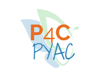

Questions about serving on the Youth Advisory Council? Contact Arynne McKenzie:
Email: amckenzie@pos4chg.org
Phone: 855-767-4244 ext. 805
Questions/comments about the funcitionality of the website? Contact Kyle Essenmacher
Email: kessen@umich.edu